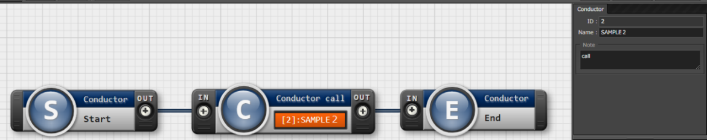

ITA_システム構成/環境構築ガイド
ActiveDirectory連携編
－第1.9版－
Copyright © NEC Corporation 2019. All rights reserved.
免責事項
本書の内容はすべて日本電気株式会社が所有する著作権に保護されています。
本書の内容の一部または全部を無断で転載および複写することは禁止されています。
本書の内容は将来予告なしに変更することがあります。
日本電気株式会社は、本書の技術的もしくは編集上の間違い、欠落について、一切責任を負いません。
日本電気株式会社は、本書の内容に関し、その正確性、有用性、確実性その他いかなる保証もいたしません。
商標
- LinuxはLinus
Torvalds氏の米国およびその他の国における登録商標または商標です。
- Red Hatは、Red Hat,
Inc.の米国およびその他の国における登録商標または商標です。
- Apache、Apache Tomcat、Tomcatは、Apache Software
Foundationの登録商標または商標です。
- Oracle、MySQLは、Oracle Corporation
およびその子会社、関連会社の米国およびその他の国における登録商標です。
MariaDBは、MariaDB Foundationの登録商標または商標です。
Ansibleは、Red Hat, Inc.の登録商標または商標です。
- Active Directoryは、米国Microsoft
Corporationの米国およびその他の国における登録商標または商標です。
その他、本書に記載のシステム名、会社名、製品名は、各社の登録商標もしくは商標です。
なお、® マーク、TMマークは本書に明記しておりません。
※本書では「Exastro IT Automation」を「ITA」として記載します。
2.10. 目次¶
2.11. はじめに¶
AD連携機能を利用するにあたっては、ITA基本機能が構築済であることが前提です。ITA基本機能の構築に関しては、「システム構成／環境構築ガイド_基本編」をご覧ください。
2.12. 機能¶
AD連携機能は、以下の機能を提供します。
表 1‑1 機能名
No |
機能名 |
用途 |
WEB コン テンツ |
Ba ckYard コン テンツ |
|---|---|---|---|---|
1 |
AD認証 (kerberos認 証機能)機能 |
ITAからAD に対してAD認証（Kerberos認証） を行います。 |
○ |
|
2 |
ミラー リング機能 |
AD上のユ ーザー情報およびグループ情報を ITA上の「ユー ザー管理」および「ロール管理」 ならびに「ロール・ユ ーザ紐付管理」にミラーリングを します。（一方向同期） |
○ |
2.13. システム構成¶
AD連携機能は、組織でお使いのドメインを構成するドメインコントローラーと連携します。
{kind=link}
ITAとドメインコントローラーの間にプロキシがある構成には対応していません。
2.14. システム要件¶
AD連携機能は、ITAシステムのシステム要件に準拠するため、「システム構成／環境構築ガイド_基本編」を
参照してください。ここではBackyardの要件を記載します。
●BackYard
表 AD連携機能 Backyardシステム要件
パッケージ* |
バージョン* |
注意事項 |
|---|---|---|
PHP |
5.6 |
表 AD連携機能 必要外部モジュール
外部ﾓｼﾞｭｰﾙ* |
バージョン* |
注意事項 |
|---|---|---|
PEAR |
1.10.3 |
2.15. 外部認証設定ファイルの準備¶
外部認証設定ファイルについて¶
外部認証設定ファイルの配備¶
外部認証設定ファイルの記述¶
外部認証設定ファイルには、「セクション」「キー」設定項目として記述します。
以下は設定例です。
各セクションおよび各キーの詳細は表 4.3‑1 ExternalAuthSetting.ini 設定値 早見表をご参照ください。
各セクションおよび各キーについては下記の表をご参照ください。
※ connect_protocolversion 以外は全て必須の要素となります。
表 4.3‑1 ExternalAuthSetting.ini 設定値 早見表
セクション |
キー |
説明 |
|---|---|---|
Authen tication_method |
AuthMode |
認証方式を設定します。 ITAで は通常「1」を設定してください。 |
Repl ication_Connect |
ConnectionUser |
ミラーリング機能に おいて、AD上の情報を探索する為の ADユーザーを指定します。 ミラーリング対象 の全てのAD情報を探索できる権限を 持つユーザーを指定して下さい。 |
UserPassword |
「ConnectionUser」要素 で指定したユーザーのパスワードを 指定します。 |
|
basedn |
ドメインのベースdnを指定します。 記述法について「LDAP識 別名の記述ルール」に基づきます。 ドメイン名を 構成するDCは指定必須となります。 探索範囲の指定につい ては、任意でOUのみ指定可能です。 ※ITAでは、OU以 外で探索範囲は指定できません。 |
|
Dom ainController_1 * [1] |
host |
連携するADを 構成するDomainControllerのホスト を指定します。 |
port |
連携するADを 構成するDomainControllerのポート を指定します。 |
|
basedn |
※ Replication_Connect の場合と同様の内容を指定 |
|
rec onnection_count |
通信不調でサ ーバーとの接続に失敗した場合に、 自動的に再 接続を試行する回数を指定します。 指定された回数内に接続で きなかった場合、ログイン画面上に エラーメッセージを返します。 |
|
connect_ protocolversion |
LDAPバージョンを指定できます。 ※指定がない場合 は、「3」で処理を実行します。 |
|
co nnect_timelimit |
DomainControll erへの接続待機時間を指定します。 指定された時間内に接続で きなかった場合、失敗となります。 |
|
s earch_timelimit |
ADにおけるKerberos 認証処理の待機時間を指定します。 指定された時間内に認証で きなかった場合、失敗となります。 |
|
LocalAuthUserId |
IdList |
ITA上のユーザーの内 、AD連携の対象外とするユーザーを 指定できます。（※I TAのユーザーIDで指定します。） カンマ区切 りで複数指定することができます。 |
LocalRoleId |
IdList |
ITA上のロールの 内、AD連携の対象外とするロールを 指定できます。（ ※ITAのロールIDで指定します。） カンマ区切 りで複数指定することができます。 |